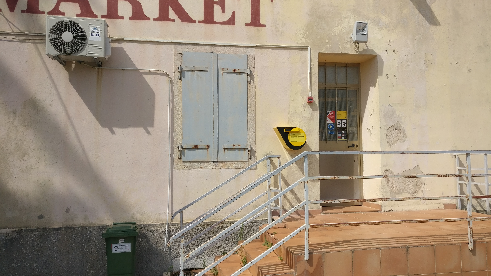

Welcome to my personal page!
I'm a social researcher and computer scientist, combining my knowledge in data science, software engineering, and human-computer interaction. After my degree in sociology in 2008 I mainly worked in the field of educational research, with growing interest in digital technologies and programming. So I started the master's degree program called "Computing in the Humanities" at the University of Bamberg and graduated in 2026. Now I'm working as a data scientist, project manager and instructor.
Lately, I've been developing data stories, which includes data analysis and interpretation as well as data visualisation and storytelling. You can find my projects here.
If you want to get in touch, you can reach me via email at florian.aschinger@posteo.de. You can also find me on LinkedIn.
